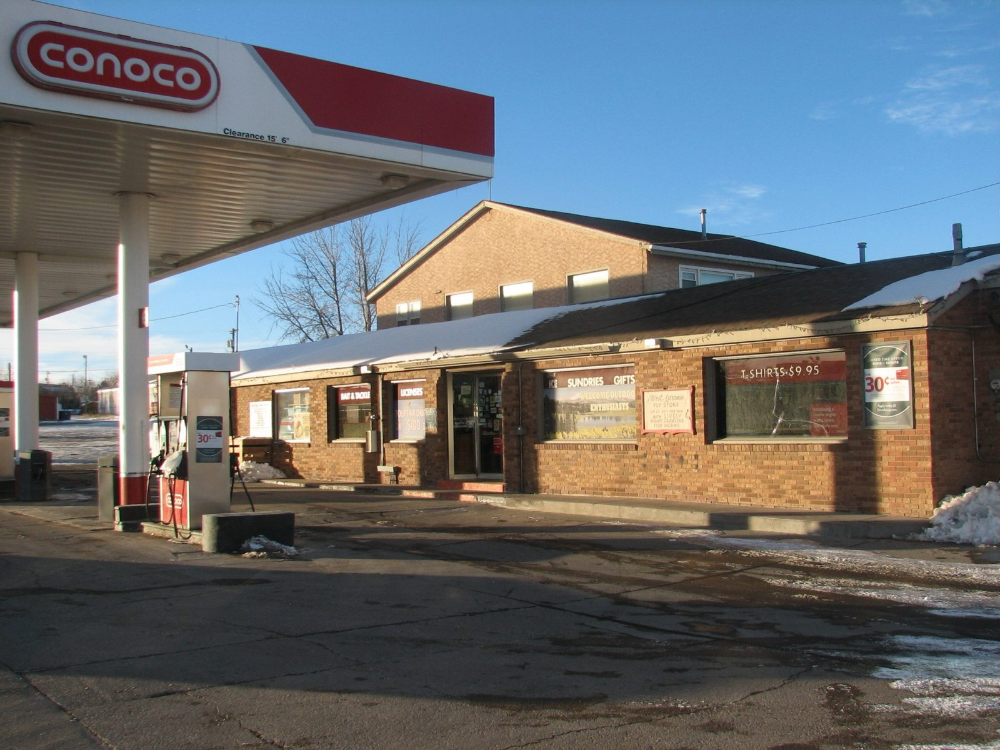
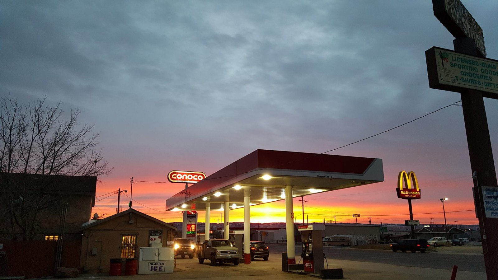
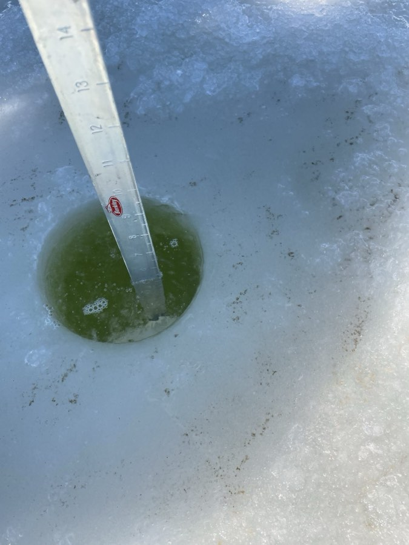

Fly fishing
Fly rods and reels from Temple Fork, fly line, tippet and leaders, plus a wall of flies for the waters around Laramie.
1657 Snowy Range Rd · Laramie, Wyoming
The one-stop shop for all your fishing, hunting and outdoor needs in southeast Wyoming. Stop by for the latest info, a cup of coffee and all the stories you can spin about the one you almost got in the net.
Open daily from 5:30 am


“A bad day fishing, is better than a good day working.”
On the shelves
Fly gear, tackle, hunting supplies and the local know-how to go with it. Can't make it in? Much of it ships from the Fly Store's online shop.
Fly rods and reels from Temple Fork, fly line, tippet and leaders, plus a wall of flies for the waters around Laramie.
Lures, hooks, terminal tackle and everything for hard-water season on the Plains Lakes.
Hunting gear and supplies for the season in southeast Wyoming. Firearms and ammunition at the counter.
Pick up your Wyoming fishing and hunting licenses on the way out of town.
Feathers, beads, cones and hooks for the vise, camping gear and maps for finding your way.
A cup of coffee, today's conditions and Fly Store hats with the elk logo. The stories are free.

Our story
The Fly Store continues to serve the outdoor sportsman in the local tradition of a family business. The family took over the store in 1969 and built it around personal service and relationships: the “one stop shop for all your needs”.
In 2004 Brandon Specht joined the business as partner and manager, carrying on the same value of service and sportsmanship. Today the Fly Store is still the resource for fishing, hunting and outdoor supplies and information in southeast Wyoming.
“A bad day fishing, is better than a good day working.”West Laramie Fly Store
Where to fish
Fishing reports
The Fly Store crew drives the lakes and rivers and posts what they find: how the fishing is, ice thickness, flows, and the baits, lures and flies that are working.
Example report · Lake Hattie
Perch, trout, and kokanee all very abundant.
Fly Store · January 24, 2024


Two Dogs Guide Service
Established in 2001 and based out of the West Laramie Fly Store: floats on the Upper and Lower North Platte (world-famous Grey Reef), wade trips in the Snowy Range and trolling for walleye on warm-water lakes. Every trip is custom-fit.
Good to know
At 5:30 am, 364 days a year. Sunday to Wednesday 5:30 am – 9 pm, Thursday 5:30 am – 10 pm, Friday 5:30 am – 11 pm, Saturday 5:30 am – 10 pm.
The easiest access to the Plains Lakes is 8.5 miles from the Fly Store, down Highway 230 at Pahlow Lane. Please be mindful of your speed on the access roads to the lakes.
Yes. Two Dogs Guide Service is based out of the Fly Store. Call (307) 761-2921 or email twodogsguideservice@gmail.com.
Yes. Rods, reels, flies, fly-tying materials, lures, ice fishing gear, hunting gear and Fly Store hats are at flystore.store.
Ask to be added to the free email reports, follow the store on Facebook, or simply call or stop by. If you head out on the ice, use extreme caution.
Visit the Fly Store
| Sun – Wed | 5:30 am – 9 pm |
|---|---|
| Thursday | 5:30 am – 10 pm |
| Friday | 5:30 am – 11 pm |
| Saturday | 5:30 am – 10 pm |